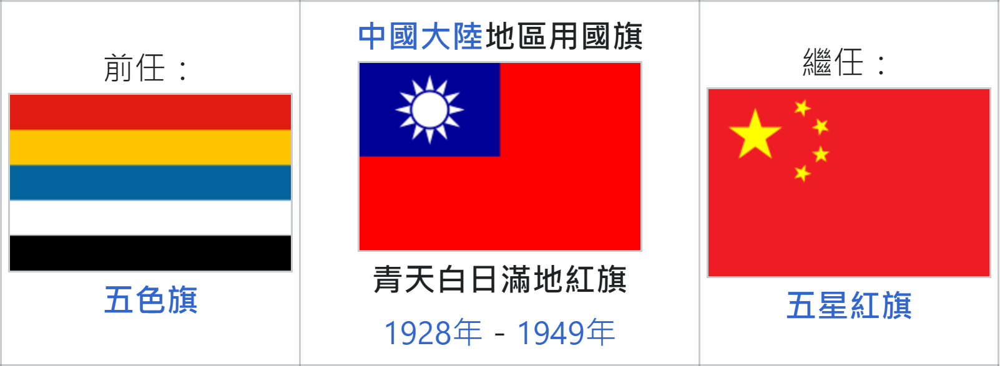
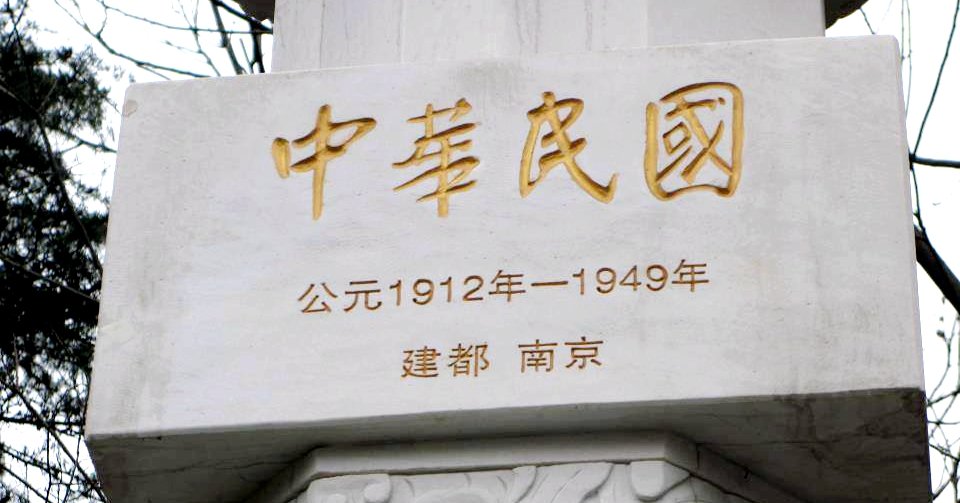

很多關於中華民國的討論，會變成吵架跟各說各話，是因為我們沒有共同的框架，所講的「中華民國」並不一樣。
西方有個知名哲學問題，叫做忒修斯之船（忒，音特），意思就是，如果一條船，經過辛苦的航行後，全部的木頭都換過了，請問，這還是一開始那一條船嗎？
忒修斯之船 / Wikipedia
https://bit.ly/3SB0mM9
中華民國，就是典型的忒修斯之船。
為了好溝通，我提議一個架構，從中華民國 1.0 到中華民國 4.0。

中華民國國旗 / Wikipedia
https://bit.ly/3UHgKg0
中華民國 1.0（1912-）首任大總統袁世凱，國旗為五色旗，是五族共和中華民國。
中華民國 2.0（1928-）孫文覺得自己被冷落，於是引入蘇共資源，跑到南部組建軍隊，武裝叛亂，之後由蔣介石奪權成功，國旗由五色旗變成與中國國民黨黨徽類似的青天白日滿地紅旗。
在中國國民黨的宣傳中，常醜化中華民國 1.0，稱之為北洋軍閥，並將武裝叛亂，美化成北伐勝利。也正因為孫文引進蘇共資源，才同時成為中國國民黨與中國共產黨的國父。注意：中華民國 1.0 與 2.0 的國土並未包括臺灣。
國民革命軍北伐 / Wikipedia
https://bit.ly/3Cda6Xx
中華民國 3.0（1950-）被中共打敗，也失去執政正當性的蔣介石，從中華民國 2.0 辭職下野後，來到臺灣，再次以中華民國為國號，借殼上市，史稱「復行視事」。這階段又稱中華民國在台灣，英文為 Republic of China。主權在蔣家父子身上，想殺誰就殺誰、想關誰就關誰。導致柏楊被關十年的大力水手漫畫翻譯，正是因為巧合諷刺了蔣家父子的中華民國 3.0。
大力水手事件 / Wikipedia
https://bit.ly/3UGklLj
中華民國 4.0（1996-）臺灣人民直選總統，實現主權在民，成為民主自由國家。目前稱為中華民國臺灣，英文為 Taiwan (ROC)，或 Taiwan。
一般說，國家為領土、人民、主權。
仔細想，中華民國 4.0 的領土、人民、主權，跟中華民國 1.0 是完全不一樣的。請問，他們真的是同一個國家嗎？
在今日臺灣，說中華民國的時候，常見的像是這樣：
認同的是中華民國 2.0 與 3.0，認為 3.0 是委屈版 2.0，而 4.0 民主太亂。這種人常以為自己仍是聯合國常任理事國的大國。他們揮舞著 2.0 與 3.0 的國旗，但以為自己從 1912 年開始建國。
只認中華民國 4.0，甚至希望能升級成臺灣 1.0。很討厭中華民國 3.0，覺得 1.0 和 2.0 與自己無關。
而蔡英文總統，為了團結臺灣，他選擇了中華民國 3.0 與 4.0 這個脈絡，強調 4.0，斷開 1.0 與 2.0。
「過去七十年來，中華民國台灣，在一次又一次的挑戰中，越發堅韌團結。我們抵抗過侵略併吞的壓力、走出獨裁體制的幽谷，也一度走在被世界孤立的曠野之中。」
中華民國第十五任總統就職演說 / 總統府
https://www.president.gov.tw/Page/586
這個妥協，讓民進黨取得政權，但也因此受到中共、深藍、深綠的共同討厭，中共害怕臺灣斷開與中國的歷史論述，深藍認為自己的 3.0 被搶走，深綠覺得你怎麼可以擁抱 3.0。
有了這個框架，日後當有人說，中華民國要滅亡了、中華民國滾回去、中華民國歷史悠久、中華民國已亡國的時候，我們就能知道，他講的到底是哪個中華民國，也因此能開展更精確的討論。
答案：
中華民國要滅亡了 = 他們覺得 3.0 變 4.0 是滅亡
中華民國滾回去 = 他們覺得 3.0 竊占臺灣
中華民國歷史悠久 = 他們常以為 1.0 開始就是青天白日滿地紅
中華民國已亡國 = 中華民國 2.0 在中國地區的確亡國了
